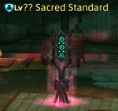

Frumious Koheel Ja
- General mechanics
-
Nothing special here - dps the boss, then dps the add spears when
they appear.

- Trash packs: Sacred Standard
-
- Move these trash packs out of the Sacred Standard circle.
-
Make sure enemies don't have the

 buffs.
buffs.
- Don't bother attacking the standards themselves.
Slithy Zolool Ja
- Totems
-
- The boss will spawn totems around the arena.
-
Different colors correspond to different effects, which are
randomized for each fight.
- Find and take the Attack Up totem before the boss does.
Manxome Molaa Ja Ja
- General mechanics
-
- Stay near the boss to dodge huge cone AoEs.
- Move away from the party if you get hit with Rotting Gas.
-
Move the boss out of his Sacred Standard (like the earlier trash
packs).
- Kill the Sacred Idol that tethers to the boss.
-
Healers: watch out for
 Doom debuffs on the party. Heal to full.
Doom debuffs on the party. Heal to full.
Guides
Console Games Wiki boss notes